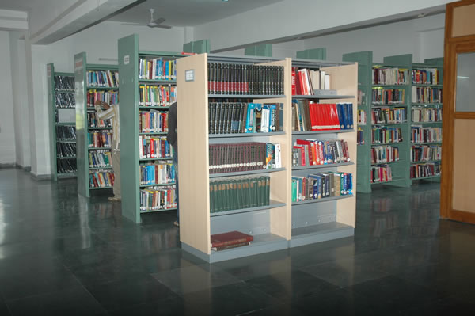

ENGINEERING NOTES would be a great option to all the students to obtain the required OU study material and notes quickly. Generally all the BE Students would be hunting or exploring for the OU Study materials. And generally the BE students for OU study Materials waste lot of time in finding them. And it is difficult to get all the OU Study materials in one place. In order to obtain all the OU STUDY MATERIALS NOTES, it has to be searched in numerous places to attain the OU study material. But ENGINEERING NOTES forum has gathered all the OU study materials for the BE students and for the other students as well.
After finding, the biggest problem would be picking up the required study material or ENGINEERING NOTES from the displayed database. Generally the students would be annoyed to find the required study materials or required OUK study material.
If a student wants to find out ENGINEERING NOTES for Mechanical engineering (ME) or Study material for Civil engineering (CE) or study material for Computer science and engineering (CSE) or the OU study material for Information technology (IT), they can find out easily by using a unique search engine option provided by the ENGINEERING NOTES.